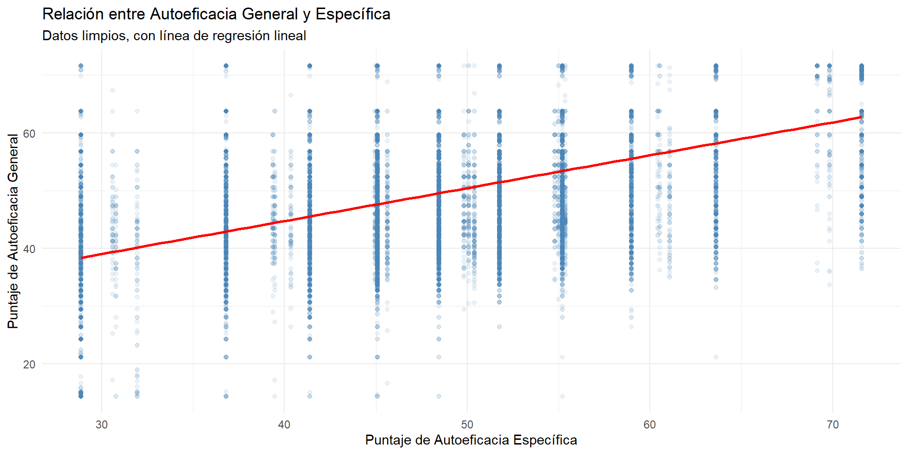
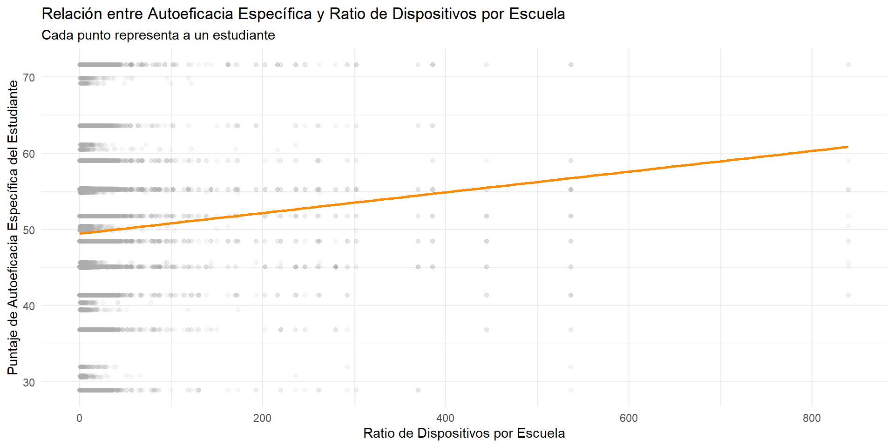
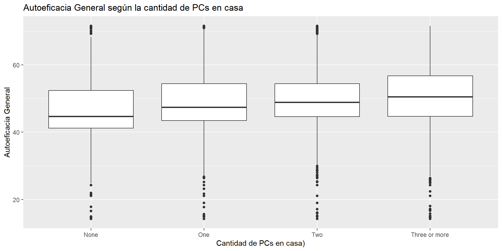
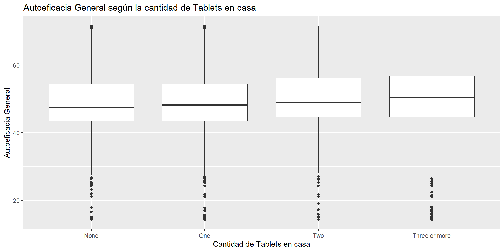
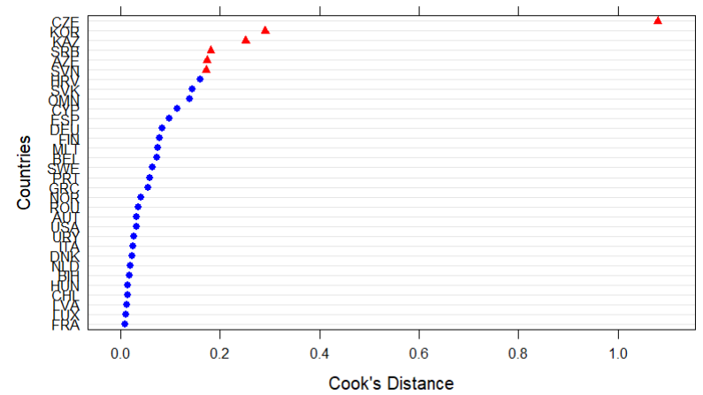
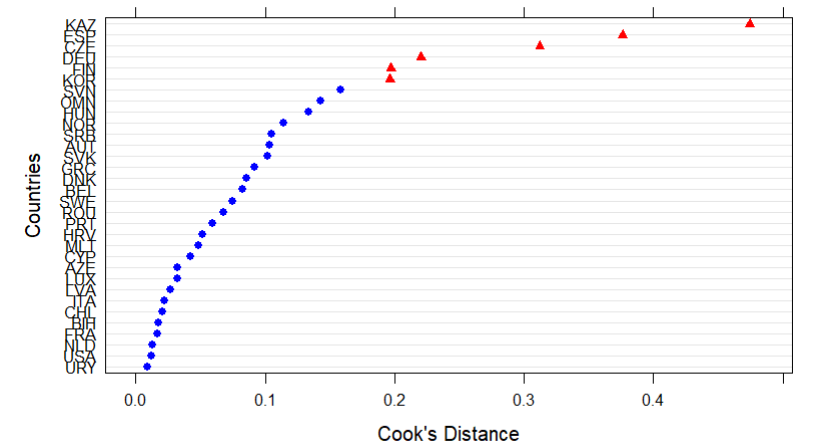
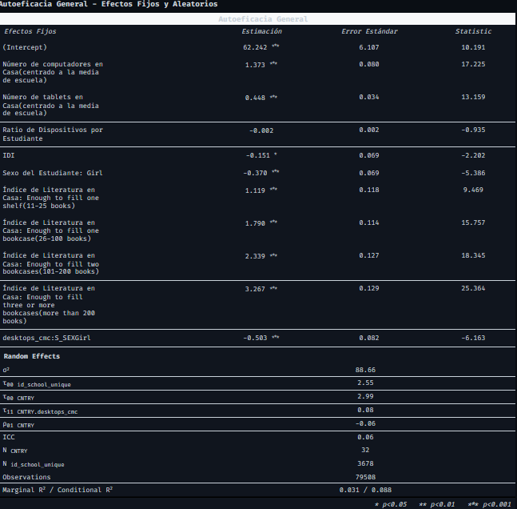
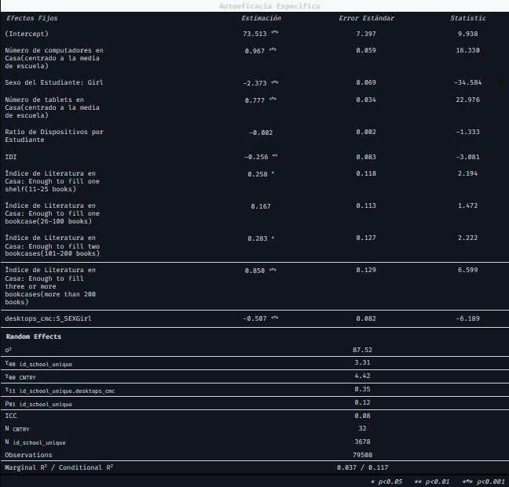
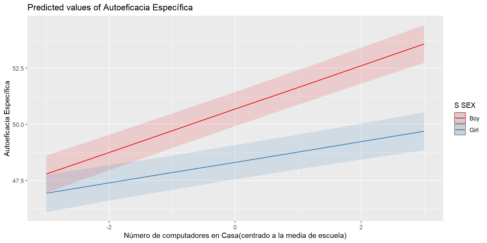

| Overall (N=79508) |
|
|---|---|
Los datos continuos se presentan como Media (Desviación Estándar) | |
| Autoeficacia General | |
| Mean (SD) | 50.2 (9.82) |
| Median [Min, Max] | 48.9 [14.3, 71.6] |
| Autoeficacia Específica | |
| Mean (SD) | 49.6 (9.94) |
| Median [Min, Max] | 48.5 [28.9, 71.6] |
| Sexo del Estudiante | |
| Boy | 39674 (49.9%) |
| Girl | 39834 (50.1%) |
| Not administered/not scored/score out of range | 0 (0%) |
| Omitted | 0 (0%) |
| Acceso a Internet en Casa | |
| No | 2424 (3.0%) |
| Yes | 77084 (97.0%) |
| Not administered/not scored/score out of range | 0 (0%) |
| Omitted | 0 (0%) |
¿Mayor acceso significa mayor autoeficacia?
Ismael Aguayo, Domingo Monasterio, Exequiel Trujillo & Antonia Vera
Análisis de Datos Multinivel - 2025
Departamento de Sociología, Universidad de Chile
Santiago, 19 de Junio de 2025
🐱github.com/multinivel-facso/trabajo1-grupo-2
Introducción
Problema de estudio: Efecto del acceso TIC en el hogar, en la escuela y en el país en la autoeficacia digital de estudiantes.
Factores asociados [L1]: Acceso de estudiantes a TIC en el hogar, alfabetización en el hogar y género.
Factores asociados [L2]: Acceso de estudiantes a TIC en la escuela.
Factores asociados [L3]: Índice de Desarrollo de TIC (IDI) en el país.
¿De qué manera el acceso a TIC en el hogar y en la escuela influye en la autoeficacia digital general y especializada de los estudiantes? ¿y cómo influye el índice de desarrollo de TIC del país?
Hipótesis:
\(H_1\)[L1]: El acceso a TIC en el hogar tendrá un efecto positivo en la autoeficacia digital de los estudiantes.
\(H_2\)[L2]: El ratio [dispositivos TIC disponibles por estudiante]/[cantidad de estudiantes] tendrá un efecto positivo en la autoeficacia digital de los estudiantes.
\(H_3\)[L3]: Los estudiantes de países con mayor IDI (Índice de Desarrollo de TIC) presentarán niveles más altos de autoeficacia digital.
\(H_4\)[L3]: El efecto del acceso a computadores en el hogas sobre la autoeficacia de los estudiantes es moderado por el sexo.
Metodología
Método Multinivel
Centrado de variables y tratamiento de casos influyentes
Modelo nulo, modelo con intercepto aleatorio y modelo con intercepto y pendiente aleatorias
Datos (ICILS 2023)
| Overall (N=79508) |
|
|---|---|
Nota: Elaborado con datos de ICILS 2023. | |
| Índice de Literatura en Casa | |
| None or very few (0 - 10 books) | 10759 (13.5%) |
| Enough to fill one shelf (11 - 25 books) | 16927 (21.3%) |
| Enough to fill one bookcase (26 - 100 books) | 23852 (30.0%) |
| Enough to fill two bookcases (101 - 200 books) | 13846 (17.4%) |
| Enough to fill three or more bookcases (more than 200 books) | 14124 (17.8%) |
| Not administered/not scored/score out of range | 0 (0%) |
| Omitted | 0 (0%) |
| Número de computadores en Casa (centrado a la media de escuela) | |
| Mean (SD) | 0.000807 (0.826) |
| Median [Min, Max] | 0.125 [-2.88, 2.54] |
| Número de tablets en Casa (centrado a la media de escuela) | |
| Mean (SD) | -0.00750 (1.01) |
| Median [Min, Max] | -0.0435 [-2.69, 2.68] |
| Overall (N=79508) |
|
|---|---|
Los datos continuos se presentan como Media (Desviación Estándar).
| |
| Ratio de Dispositivos por Escuela | |
| Mean (SD) | 5.12 (9.63) |
| Median [Min, Max] | 3.00 [0.0700, 231] |
| Ratio de Dispositivos por Estudiante | |
| Mean (SD) | 9.90 (27.5) |
| Median [Min, Max] | 4.83 [0.0800, 840] |
| Overall (N=34) |
|
|---|---|
Los datos se presentan como Media (Desviación Estándar).
| |
| ICT Development Index (IDI) | |
| Mean (SD) | 89.0 (4.61) |
| Median [Min, Max] | 88.3 [76.6, 96.9] |
| Missing | 2 (5.9%) |
Variables
Variables dependientes: Autoeficacia (general y específica)
Variables nivel 1: Disponibilidad de aparatos TIC en el hogar: computadores, tablets y smartphones; Índice de literatura del hogar; Sexo de estudiantes; Acceso a internet.
Variables nivel 2: Ratio de aparatos TIC disponibles por estudiante: computadores y tablets; Reporte de coordinadores TIC sobre disponibilidad de recursos TIC en escuela.
Variables nivel 3: IDI
Modelos Multinivel de Autoeficacia
Modelo 1: Autoeficacia General
\[ \begin{align} S\_GENEFF_{ijk} &= \delta_{000} + \delta_{100} \cdot desktops\_cmc_{ijk} + \beta_2 \cdot tablets\_cmc_{ijk} \\ &\quad + \beta_3 \cdot C\_RATSTD_{jk} + \beta_4 \cdot IDI_{k} \\ &\quad + \beta_5 \cdot (desktops\_cmc_{ijk} \times S\_SEX_{ijk}) \\ &\quad + \beta_6 \cdot S\_HOMLIT_{ijk} + \beta_7 \cdot S\_SEX_{ijk} \\ &\quad + v_{00k} + v_{10k} \cdot desktops\_cmc_{ijk} + u_{0jk} + e_{ijk} \end{align} \]
Índices:
\(i\) = estudiante
\(j\) = escuela
\(k\) = país
Coeficientes:
\(\beta\) = efectos fijos (estudiante)
\(\gamma\) = efectos escuela
\(\delta\) = efectos país
Efectos Aleatorios:
\(e_{ijk} \sim N(0, \sigma_e^2)\)
\(u_{0jk} \sim N(0, \sigma_u^2)\)
\((v_{00k}, v_{10k})' \sim MVN(0, \mathbf{T}_v)\)
donde \(\mathbf{T}_v = \begin{pmatrix} \tau_{00} & \tau_{01} \\ \tau_{01} & \tau_{11} \end{pmatrix}\)
Modelo 2: Autoeficacia Específica
\[ \begin{align} S\_SPECEFF_{ijk} &= \delta_{000} + \delta_{100} \cdot desktops\_cmc_{ijk} + \beta_2 \cdot tablets\_cmc_{ijk} \\ &\quad + \beta_3 \cdot C\_RATSTD_{jk} + \beta_4 \cdot IDI_{k} \\ &\quad + \beta_5 \cdot (desktops\_cmc_{ijk} \times S\_SEX_{ijk}) \\ &\quad + \beta_6 \cdot S\_HOMLIT_{ijk} + \beta_7 \cdot S\_SEX_{ijk} \\ &\quad + v_{00k} + u_{0jk} + u_{1jk} \cdot desktops\_cmc_{ijk} + e_{ijk} \end{align} \]
Índices:
\(i\) = estudiante
\(j\) = escuela
\(k\) = país
Efectos Aleatorios:
\(e_{ijk} \sim N(0, \sigma_e^2)\)
\(v_{00k} \sim N(0, \tau_{00})\)
\((u_{0jk}, u_{1jk})' \sim MVN(0, \mathbf{T}_u)\)
donde \(\mathbf{T}_u = \begin{pmatrix} \sigma_{u00} & \sigma_{u01} \\ \sigma_{u01} & \sigma_{u11} \end{pmatrix}\)
Resultados descriptivos





Resultados por País




Interacción

Conclusiones
- Efecto de computadores > efecto tablets… calidad de acceso?
- El género como moderador del efecto de los computadores en el hogar
- Países con + IDI ≠ países con + autoeficacia
- La insignificancia de la escuela
Referencias
Bandura, A. (Ed.). (1995). Self-efficacy in changing societies. Cambridge University Press. https://doi.org/10.1017/CBO9780511527692
Eastin, M. S., & LaRose, R. (2000). Internet self-efficacy and the psychology of the digital divide. Journal of Computer-Mediated Communication, 6(1). https://doi.org/10.1111/j.1083-6101.2000.tb00110.x
Hatlevik, O. E., Gudmundsdottir, G. B., & Loi, M. (2018). Digital diversity among upper secondary students: A multilevel analysis of the relationship between socio-economic status and digital competence. Computers & Education, 120, 91–102. https://doi.org/10.1016/j.compedu.2014.10.019
Ulfert-Blank, A. S., & Schmidt, I. (2022). Assessing digital self-efficacy: Review and scale development. Computers & Education, 191, 104626. https://doi.org/10.1016/j.compedu.2022.104626